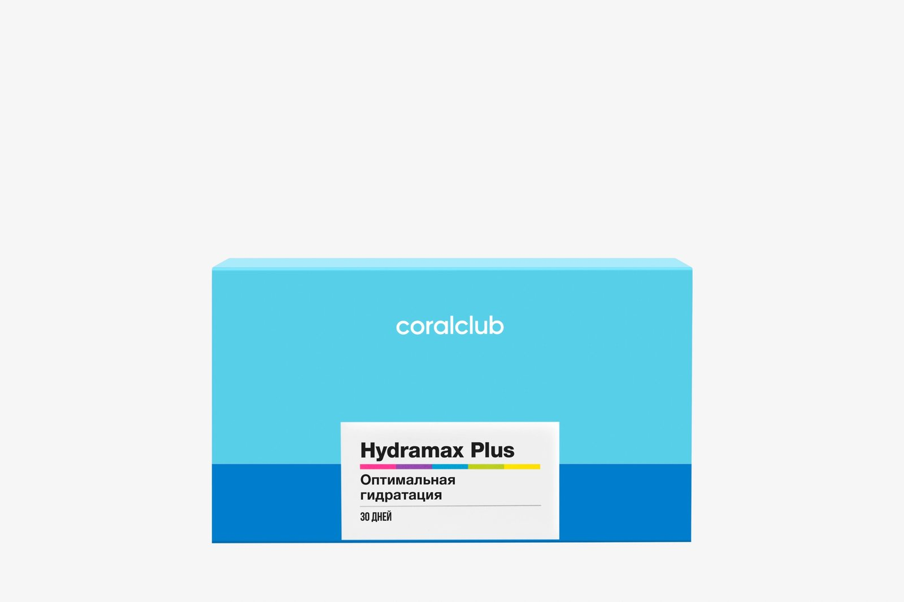
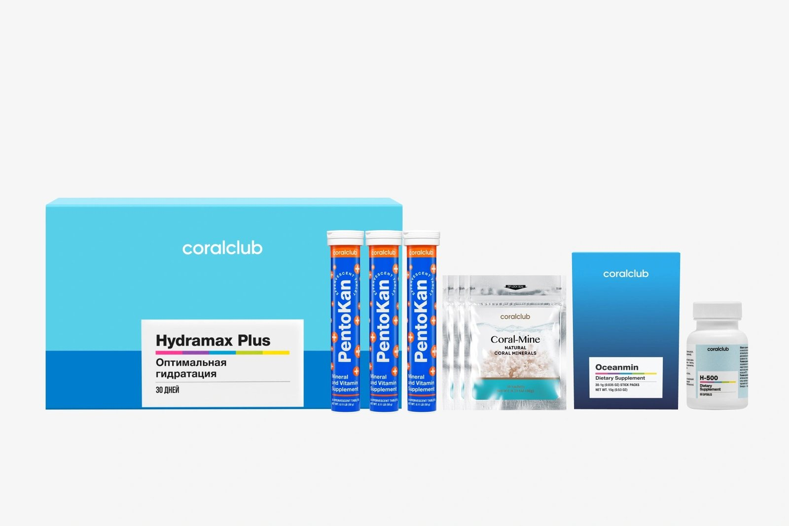
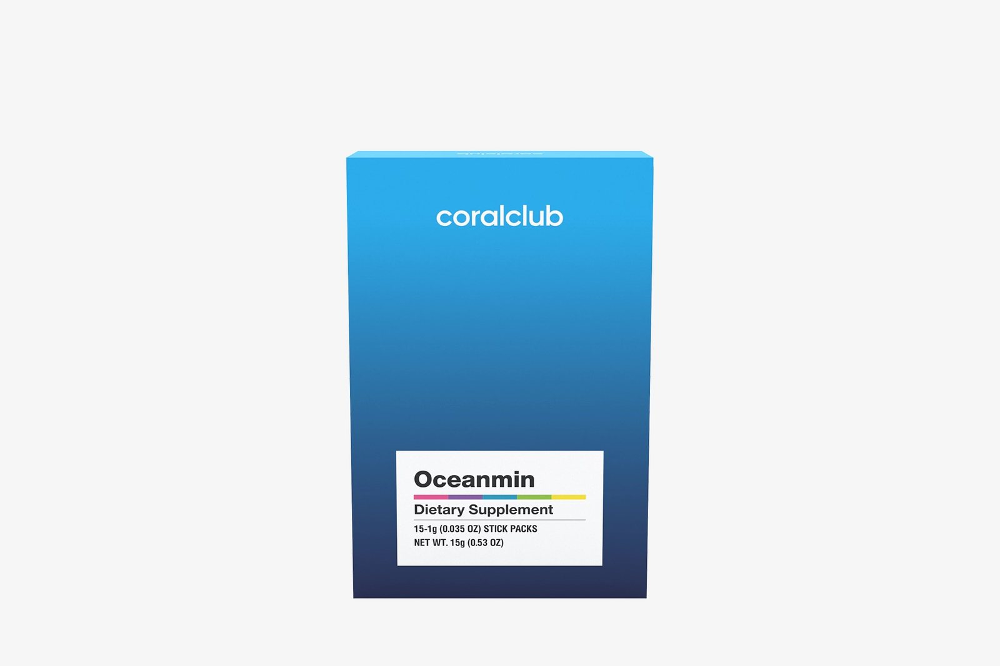
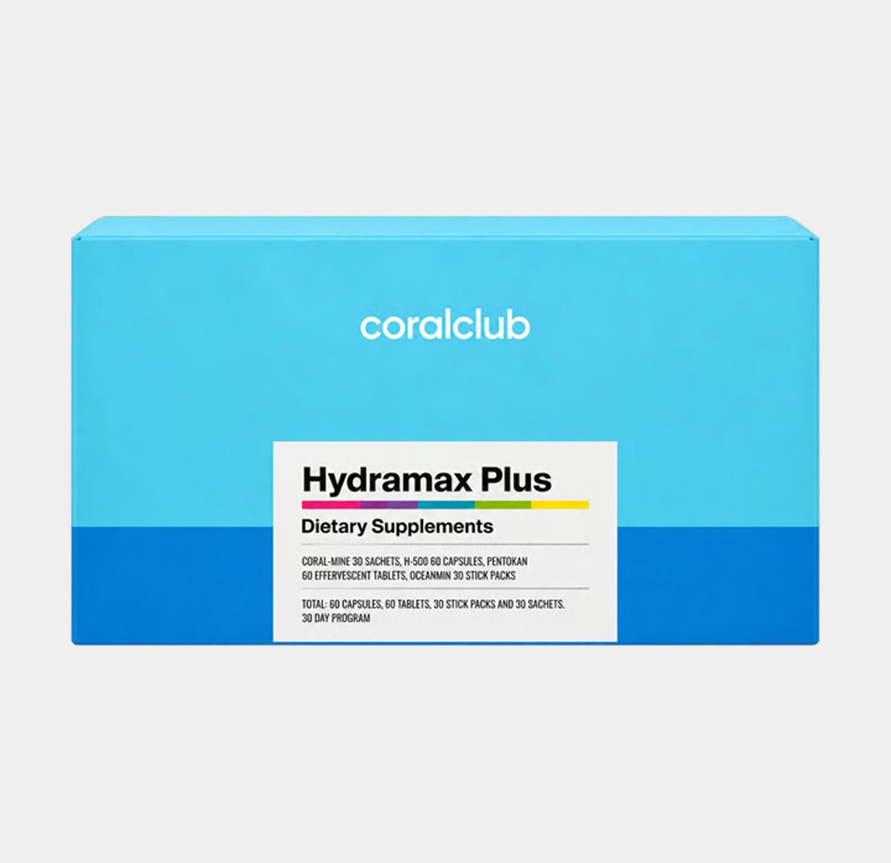
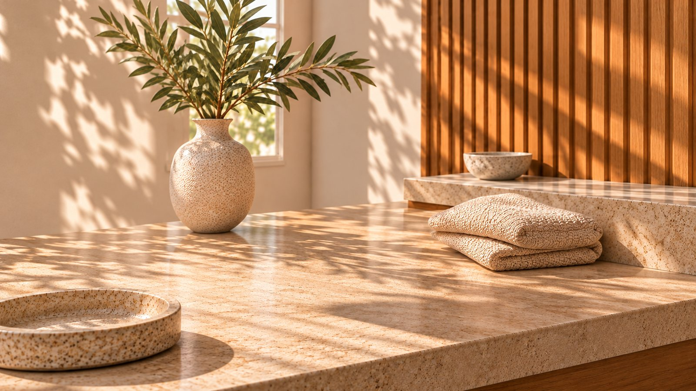
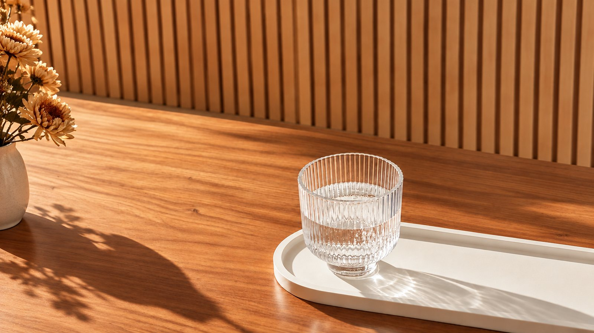
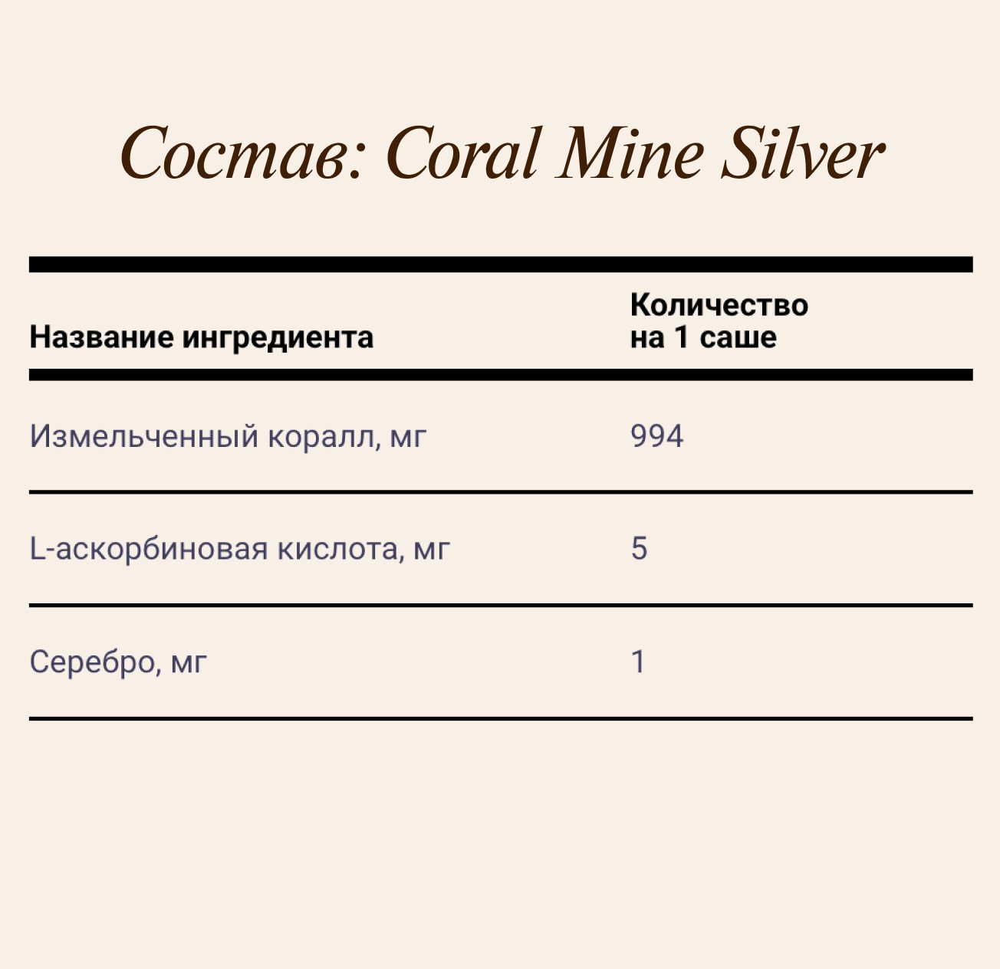

Гидрамакс Плюс stable
Факты
Источник — карточка товара на coralclub.ru. Тексты на картинках берём только отсюда.
Параметр | Значение |
Артикулы | 80720 — набор на 30 дней |
Форма | Набор из 4 продуктов. Коробка, внутри Корал-Майн, ПентоКан, H-500 и Оушенмин — каждый в своей упаковке. |
Упаковка | Корал-Майн — 3 упаковки (30 саше); ПентоКан — 3 тубы (60 шипучих таблеток); H-500 — 1 банка (60 капсул); Оушенмин — 1 упаковка (30 стиков) |
Размер | Коробка ≈ 29 × 17 см спереди (глубину сверить) |
Применение | Корал-Майн: 1 саше, не вскрывая, в 1,5 л воды; через 5 минут вода готова, выпить за день. ПентоКан: 1 таблетка в 60 мл воды или сока, 2 раза в день во время еды. H-500: 1 капсула утром и 1 днём, во время еды. Оушенмин: 1 стик в 750 мл воды, пить в течение дня после еды. Перед применением прочтите инструкцию внутри упаковки. |
На сколько хватит | Программа на 30 дней |
Страна производства | Япония, США, Тайвань, Германия |
Срок годности | 2 года |
Главное правило кадра
Фото продукта для референса

hydramax-plus-box
hydramax-plus-contents coral-mine-pouch
coral-mine-pouch pentokan-tube
pentokan-tube
oceanmin-box h500-bottle
h500-bottleЧто в наборе
Корал-Майн — 3 упаковки (30 саше); ПентоКан — 3 тубы (60 шипучих таблеток); H-500 — 1 банка (60 капсул); Оушенмин — 1 упаковка (30 стиков)
Что поправить в примерах
В заголовке опечатка «гидротация» — правильно «гидратация».
Схема «с вечера Корал-Майн в графин» неверна: по сайту вода с Корал-Майн готова через 5 минут. Тексты и порядок — в карточке 4 ниже.
«Состав: Pentokan+», «Oceanmin», «H-500» — в таблицах данные Корал-Майн (коралл 994 мг и т. д.) и единица «на 1 саше». Нужны данные каждого продукта и своя единица: таблетка, стик, капсула.
1. Коробка на сером фоне
Узнаваемость набора.

Пример из текущей галереи- Как у монопродукта: фон #EFEFEF, коробка спереди, по центру, без текста.
Use the attached product photos as the exact product: keep its shape, proportions, colors, label, logo and every printed word unchanged. Do not redraw, translate or invent label text. Studio e-commerce packshot: the closed Hydramax Plus box, front view. Flat seamless light grey background #EFEFEF, no gradient, no props. The product is centered and fills about 70% of the frame height. Soft natural contact shadow under it, no reflections, even soft light, true colors. Real size: the box is about 29 × 17 cm from the front — wider than three 9 cm glasses side by side; the PentoKan tubes are about 14.5 cm tall, the Coral-Mine pouches about 8 × 11 cm, the Oceanmin box about 9 × 13 cm, the H-500 bottle about 5 × 8.5 cm. Square 1:1, 2000 × 2000 px. No text, no watermarks.Приложить к промту:
фото продукта — точная упаковкафото продукта — точная упаковкафото продукта — точная упаковкафото продукта — точная упаковкапример этой карточки (стиль и композиция)2. Коробка и всё, что внутри
Видно, что в наборе 4 продукта и сколько каждого.
 Пример из текущей галереи
Пример из текущей галереи- Коробка + всё содержимое в точном количестве (см. продукт).
- Продукты в одном ряду, этикетки читаются, масштаб реальный (линейка масштаба).
- Рядом стакан 9 см.
- Можно плашку «30 дней · 4 продукта».
Плашка (добавить в Figma): 30 дней · 4 продукта
Premium wellness e-commerce photography in a warm, sunlit, minimalist interior. Golden-hour hard window light from the side, long crisp shadows with soft leaf and window-frame patterns. Materials: natural oak wood, beige travertine or light warm marble, warm beige walls, a vertical slatted oak panel in the background, a ceramic vase with a dried flower or olive branch. Calm, airy and realistic, true-to-life colors, shallow depth of field, 50–85 mm lens look. Square 1:1, 2000 × 2000 px. No watermarks, no extra logos, no invented text. Scene: a warm oak dining table in low sunlight, ribbed glass of water on a round travertine tray, ceramic vase with an olive branch, vertical slatted oak wall panel. Use the attached product photos as the exact product: keep its shape, proportions, colors, label, logo and every printed word unchanged. Do not redraw, translate or invent label text. Show the purchased quantity clearly: the Hydramax Plus box on the left and, lined up in front of it, exactly: three PentoKan tubes, three Coral-Mine Silver pouches, one Oceanmin box and one H-500 bottle; a ribbed glass of water on a travertine tray at the right edge. Real size: the box is about 29 × 17 cm from the front — wider than three 9 cm glasses side by side; the PentoKan tubes are about 14.5 cm tall, the Coral-Mine pouches about 8 × 11 cm, the Oceanmin box about 9 × 13 cm, the H-500 bottle about 5 × 8.5 cm. Keep everything to real scale: the ribbed drinking glass is 9 cm tall and 8 cm wide (about 300 ml), an adult hand is about 18 cm long, the round travertine tray is about 28 cm across. Show exactly what is in the box: 3 Coral-Mine pouches, 3 PentoKan tubes, 1 Oceanmin box, 1 H-500 bottle. Nothing extra, nothing missing. The Coral-Mine sachets stay sealed — nothing pours out of them. No text in the image.Приложить к промту:
фото продукта — точная упаковкафото продукта — точная упаковкафото продукта — точная упаковкафото продукта — точная упаковка интерьер: Дубовый стол, солнечный свет
интерьер: Дубовый стол, солнечный свет стакан 9 см — мерка масштаба
стакан 9 см — мерка масштаба линейка масштаба упаковок
линейка масштаба упаковок пример этой карточки (стиль и композиция)
пример этой карточки (стиль и композиция)3. Killer claims набора
Зачем брать набор, а не продукты по одному.
- Факты про программу целиком, не повторяют claims отдельных продуктов.
- Сцена с коробкой и предметом интерьера.
Текст на карточке: Максимальная гидратация и насыщение — 4 продукта — одна программа на 30 дней · Минералы, электролиты и антиоксиданты · Из Японии, США, Тайваня и Германии
Premium wellness e-commerce photography in a warm, sunlit, minimalist interior. Golden-hour hard window light from the side, long crisp shadows with soft leaf and window-frame patterns. Materials: natural oak wood, beige travertine or light warm marble, warm beige walls, a vertical slatted oak panel in the background, a ceramic vase with a dried flower or olive branch. Calm, airy and realistic, true-to-life colors, shallow depth of field, 50–85 mm lens look. Square 1:1, 2000 × 2000 px. No watermarks, no extra logos, no invented text. Scene: a beige travertine counter with a round travertine tray, a folded linen towel and a ceramic vase with olive branches. Use the attached product photos as the exact product: keep its shape, proportions, colors, label, logo and every printed word unchanged. Do not redraw, translate or invent label text. The closed Hydramax Plus box standing on the travertine counter, a ribbed glass of water on a travertine tray beside it, a vase with an olive branch behind. Real size: the box is about 29 × 17 cm from the front — wider than three 9 cm glasses side by side; the PentoKan tubes are about 14.5 cm tall, the Coral-Mine pouches about 8 × 11 cm, the Oceanmin box about 9 × 13 cm, the H-500 bottle about 5 × 8.5 cm. Keep everything to real scale: the ribbed drinking glass is 9 cm tall and 8 cm wide (about 300 ml), an adult hand is about 18 cm long, the round travertine tray is about 28 cm across. Show exactly what is in the box: 3 Coral-Mine pouches, 3 PentoKan tubes, 1 Oceanmin box, 1 H-500 bottle. Nothing extra, nothing missing. The Coral-Mine sachets stay sealed — nothing pours out of them. Keep the left half of the frame calm and empty for text. Text on that left half, color #3F2006: a title in an elegant italic serif «Максимальная гидратация и насыщение», below it a list in a clean sans-serif: «• 4 продукта — одна программа на 30 дней», «• Минералы, электролиты и антиоксиданты», «• Из Японии, США, Тайваня и Германии». Render the Russian text exactly as written, letter by letter, in the given order; no other text anywhere in the image.Premium wellness e-commerce photography in a warm, sunlit, minimalist interior. Golden-hour hard window light from the side, long crisp shadows with soft leaf and window-frame patterns. Materials: natural oak wood, beige travertine or light warm marble, warm beige walls, a vertical slatted oak panel in the background, a ceramic vase with a dried flower or olive branch. Calm, airy and realistic, true-to-life colors, shallow depth of field, 50–85 mm lens look. Square 1:1, 2000 × 2000 px. No watermarks, no extra logos, no invented text. Scene: a beige travertine counter with a round travertine tray, a folded linen towel and a ceramic vase with olive branches. Use the attached product photos as the exact product: keep its shape, proportions, colors, label, logo and every printed word unchanged. Do not redraw, translate or invent label text. The closed Hydramax Plus box standing on the travertine counter, a ribbed glass of water on a travertine tray beside it, a vase with an olive branch behind. Real size: the box is about 29 × 17 cm from the front — wider than three 9 cm glasses side by side; the PentoKan tubes are about 14.5 cm tall, the Coral-Mine pouches about 8 × 11 cm, the Oceanmin box about 9 × 13 cm, the H-500 bottle about 5 × 8.5 cm. Keep everything to real scale: the ribbed drinking glass is 9 cm tall and 8 cm wide (about 300 ml), an adult hand is about 18 cm long, the round travertine tray is about 28 cm across. Show exactly what is in the box: 3 Coral-Mine pouches, 3 PentoKan tubes, 1 Oceanmin box, 1 H-500 bottle. Nothing extra, nothing missing. The Coral-Mine sachets stay sealed — nothing pours out of them. Keep the left half of the frame calm and empty for a text overlay added later. No text in the image.Приложить к промту:
фото продукта — точная упаковкафото продукта — точная упаковкафото продукта — точная упаковкафото продукта — точная упаковка
интерьер: Травертин и оливковые ветвистакан 9 см — мерка масштабалинейка масштаба упаковокпример этой карточки (стиль и композиция)4. Как принимать
Распорядок дня: что, сколько и когда — по каждому продукту.
- По одной строке на продукт: дозировка и время.
- Внизу: «Перед применением прочтите инструкцию внутри упаковки».
Текст на карточке: Как принимать — Корал-Майн: 1 саше на 1,5 л воды в день · ПентоКан: 1 таблетка 2 раза в день с едой · H-500: 1 капсула утром и днём с едой · Оушенмин: 1 стик на 750 мл воды после еды
Premium wellness e-commerce photography in a warm, sunlit, minimalist interior. Golden-hour hard window light from the side, long crisp shadows with soft leaf and window-frame patterns. Materials: natural oak wood, beige travertine or light warm marble, warm beige walls, a vertical slatted oak panel in the background, a ceramic vase with a dried flower or olive branch. Calm, airy and realistic, true-to-life colors, shallow depth of field, 50–85 mm lens look. Square 1:1, 2000 × 2000 px. No watermarks, no extra logos, no invented text. Scene: a close-up of a ribbed glass of water on a long white ceramic tray on an oak table, dried flowers in the corner. Use the attached product photos as the exact product: keep its shape, proportions, colors, label, logo and every printed word unchanged. Do not redraw, translate or invent label text. A calm morning table: a 1.5 l glass carafe of water with one sealed sachet at the bottom, a small glass with a fizzing tablet, one capsule on a plate, a 750 ml bottle of water with an Oceanmin stick pack beside it. Real size: the box is about 29 × 17 cm from the front — wider than three 9 cm glasses side by side; the PentoKan tubes are about 14.5 cm tall, the Coral-Mine pouches about 8 × 11 cm, the Oceanmin box about 9 × 13 cm, the H-500 bottle about 5 × 8.5 cm. Keep everything to real scale: the ribbed drinking glass is 9 cm tall and 8 cm wide (about 300 ml), an adult hand is about 18 cm long, the round travertine tray is about 28 cm across. Show exactly what is in the box: 3 Coral-Mine pouches, 3 PentoKan tubes, 1 Oceanmin box, 1 H-500 bottle. Nothing extra, nothing missing. The Coral-Mine sachets stay sealed — nothing pours out of them. Keep the bottom third of the frame calm and empty for text. Text on that bottom third, color #3F2006: a title in an elegant italic serif «Как принимать», below it a list in a clean sans-serif: «• Корал-Майн: 1 саше на 1,5 л воды в день», «• ПентоКан: 1 таблетка 2 раза в день с едой», «• H-500: 1 капсула утром и днём с едой», «• Оушенмин: 1 стик на 750 мл воды после еды». Render the Russian text exactly as written, letter by letter, in the given order; no other text anywhere in the image.Premium wellness e-commerce photography in a warm, sunlit, minimalist interior. Golden-hour hard window light from the side, long crisp shadows with soft leaf and window-frame patterns. Materials: natural oak wood, beige travertine or light warm marble, warm beige walls, a vertical slatted oak panel in the background, a ceramic vase with a dried flower or olive branch. Calm, airy and realistic, true-to-life colors, shallow depth of field, 50–85 mm lens look. Square 1:1, 2000 × 2000 px. No watermarks, no extra logos, no invented text. Scene: a close-up of a ribbed glass of water on a long white ceramic tray on an oak table, dried flowers in the corner. Use the attached product photos as the exact product: keep its shape, proportions, colors, label, logo and every printed word unchanged. Do not redraw, translate or invent label text. A calm morning table: a 1.5 l glass carafe of water with one sealed sachet at the bottom, a small glass with a fizzing tablet, one capsule on a plate, a 750 ml bottle of water with an Oceanmin stick pack beside it. Real size: the box is about 29 × 17 cm from the front — wider than three 9 cm glasses side by side; the PentoKan tubes are about 14.5 cm tall, the Coral-Mine pouches about 8 × 11 cm, the Oceanmin box about 9 × 13 cm, the H-500 bottle about 5 × 8.5 cm. Keep everything to real scale: the ribbed drinking glass is 9 cm tall and 8 cm wide (about 300 ml), an adult hand is about 18 cm long, the round travertine tray is about 28 cm across. Show exactly what is in the box: 3 Coral-Mine pouches, 3 PentoKan tubes, 1 Oceanmin box, 1 H-500 bottle. Nothing extra, nothing missing. The Coral-Mine sachets stay sealed — nothing pours out of them. Keep the bottom third of the frame calm and empty for a text overlay added later. No text in the image.Приложить к промту:
фото продукта — точная упаковкафото продукта — точная упаковкафото продукта — точная упаковкафото продукта — точная упаковка
интерьер: Стакан на подносе, крупный планстакан 9 см — мерка масштабалинейка масштаба упаковокпример этой карточки (стиль и композиция)5. Состав: Корал-Майн Сильвер
Состав каждого продукта набора отдельно.

Пример из текущей галереи- Заголовок «Состав: Корал-Майн» и т. д.
- Данные и единица — со страницы продукта, не копировать таблицу соседа.
- Порядок: Корал-Майн, ПентоКан, H-500, Оушенмин.
Typographic product card, no photo. Square 1:1, 2000 × 2000 px. Flat background #F8EFE6, all text #3F2006. Title centered at the top in an elegant italic serif: «Состав: Корал-Майн Сильвер». Below it a clean table in a sans-serif, thick black rule above and below the header row, thin rules between rows. Header: «Название ингредиента» | «Количество на 1 саше». Rows: «Измельчённый коралл, мг» | «994»; «L-аскорбиновая кислота, мг» | «5»; «Серебро, мг» | «1». Small footnotes at the bottom, one per line: «Страна производства: Япония. Срок годности: 5 лет.», «БАД. Не является лекарственным средством.». Render the Russian text exactly as written, letter by letter, in the given order; no other text anywhere in the image.Приложить к промту:

6. Состав: ПентоКан
Состав каждого продукта набора отдельно.
- Заголовок «Состав: Корал-Майн» и т. д.
- Данные и единица — со страницы продукта, не копировать таблицу соседа.
- Порядок: Корал-Майн, ПентоКан, H-500, Оушенмин.
Typographic product card, no photo. Square 1:1, 2000 × 2000 px. Flat background #F8EFE6, all text #3F2006. Title centered at the top in an elegant italic serif: «Состав: ПентоКан». Below it a clean table in a sans-serif, thick black rule above and below the header row, thin rules between rows. Header: «Название ингредиента» | «Количество на 1 таблетку» | «% РУСП*». Rows: «Калий (калия гидрокарбонат), мг» | «420» | «12%»; «Витамин C (L-аскорбиновая кислота), мг» | «100» | «166,7%**»; «Инулин (из корня цикория), мг» | «87,5» | «3,5%»; «D-рибоза, мг» | «20» | «10%». Small footnotes at the bottom, one per line: «Вспомогательные компоненты: лимонная кислота, декстрин кукурузный, сорбит из зёрен кукурузы и пшеницы***, крахмал картофельный.», «* Рекомендуемый уровень суточного потребления.», «** Не превышает верхний допустимый уровень потребления.», «*** При чрезмерном потреблении может оказывать слабительное действие.», «Страна производства: Германия. Срок годности: 2 года.», «БАД. Не является лекарственным средством.». Render the Russian text exactly as written, letter by letter, in the given order; no other text anywhere in the image.Приложить к промту:
7. Состав: H-500
Состав каждого продукта набора отдельно.
- Заголовок «Состав: Корал-Майн» и т. д.
- Данные и единица — со страницы продукта, не копировать таблицу соседа.
- Порядок: Корал-Майн, ПентоКан, H-500, Оушенмин.
Typographic product card, no photo. Square 1:1, 2000 × 2000 px. Flat background #F8EFE6, all text #3F2006. Title centered at the top in an elegant italic serif: «Состав: H-500». Below it a clean table in a sans-serif, thick black rule above and below the header row, thin rules between rows. Header: «Название ингредиента» | «Количество на 1 капсулу» | «% РУСП*». Rows: «Смесь H-500 (калия цитрат, магния цитрат, калия аскорбат, натрия борат, кремния диоксид), мг» | «300» | «—». Small footnotes at the bottom, one per line: «Вспомогательные компоненты: желатин (капсула).», «* Рекомендуемый уровень суточного потребления; «—» — не определён.», «Страна производства: США. Срок годности: 2 года.», «БАД. Не является лекарственным средством.». Render the Russian text exactly as written, letter by letter, in the given order; no other text anywhere in the image.Приложить к промту:
8. Состав: Оушенмин
Состав каждого продукта набора отдельно.
- Заголовок «Состав: Корал-Майн» и т. д.
- Данные и единица — со страницы продукта, не копировать таблицу соседа.
- Порядок: Корал-Майн, ПентоКан, H-500, Оушенмин.
Typographic product card, no photo. Square 1:1, 2000 × 2000 px. Flat background #F8EFE6, all text #3F2006. Title centered at the top in an elegant italic serif: «Состав: Оушенмин». Below it a clean table in a sans-serif, thick black rule above and below the header row, thin rules between rows. Header: «Название ингредиента» | «Количество на 1 стик (1 г)» | «% РУСП*». Rows: «Магний, мг» | «120» | «30%»; «Натрий, мг» | «90» | «—»; «Калий, мг» | «35» | «1%»; «Кальций, мг» | «0,9» | «0%». Small footnotes at the bottom, one per line: «Состав: магния хлорид, магния сульфат, натрия хлорид, иные микроэлементы в виде солей неорганических кислот (получены из морской воды, отобранной с большой глубины), калия хлорид, кальция хлорид, кальция сульфат.», «Масса нетто: 15 г.», «* Рекомендуемый уровень суточного потребления; «—» — не определён.», «Страна производства: Тайвань. Срок годности: 3 года.», «БАД. Не является лекарственным средством.». Render the Russian text exactly as written, letter by letter, in the given order; no other text anywhere in the image.Приложить к промту: